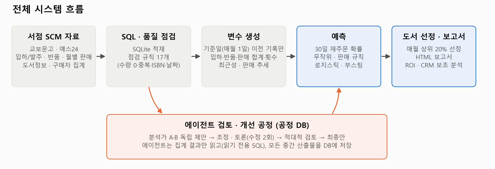
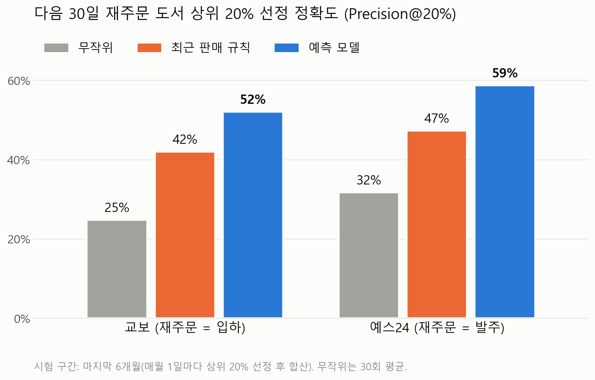
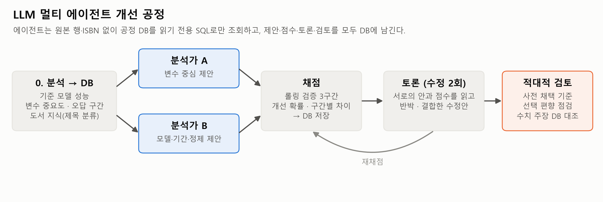
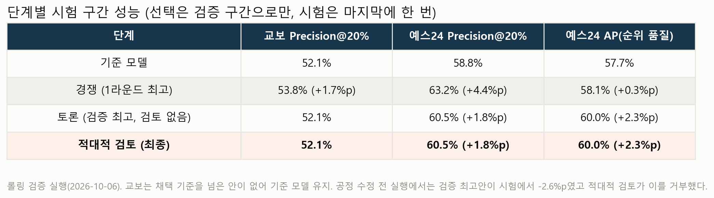

출판사가 어느 도서에 재고와 마케팅 자원을 먼저 쓸지 정하도록 돕는 산학 프로젝트. 교보문고와 예스24 SCM 자료로 다음 30일 재주문 도서 상위 20%를 예측하고, LLM 멀티 에이전트가 개선안을 내고 서로 토론한 뒤 적대적 검토자가 최종안을 고르는 공정을 만들었습니다. 에이전트는 원본 행 없이 읽기 전용 SQL로 집계 결과만 보고, 모든 제안과 점수와 판정은 DB에 남습니다.
01개요
| 단계 | 접근 | 핵심 결과 |
|---|---|---|
| 재주문 예측 | 매월 1일 기준 이전 기록으로 변수, 이후 30일로 라벨 구성. 로지스틱 회귀와 그래디언트 부스팅을 무작위, 최근 판매 규칙과 비교 | Precision@20% 교보 52%, 예스24 59% (판매 규칙 42%, 47%) |
| 에이전트 데이터 검토 | 오류를 일부러 넣은 자료에서 분석가 A, B, 조정자, 적대적 검토자가 정제 조치를 고름 | 규칙이 놓친 반품 날짜 오기 93%, 판매 중복 100% 처리 |
| 예측 개선 공정 | 두 에이전트가 개선안을 경쟁, 토론(수정 2회)하고 적대적 검토자가 사전 채택 기준으로 최종안 선택 | 예스24 채택안 시험 구간 Precision@20% +1.8%p, AP +2.3%p |
| 도서 지식 에이전트 | 제목만 보고 167종을 독립 분류, 엇갈린 29종은 판정 에이전트가 결정. 공식 시험 일정 확인 | 3월, 9월 재주문 쏠림을 시험이 아닌 학기 시작으로 설명 |
02문제 정의
의사결정
컴퓨터, AI 교육 도서 출판사 마린북스(온에듀)는 한정된 재고와 마케팅 자원을 어느 도서에 먼저 배분할지 판단할 근거가 필요했습니다
서점마다 다른 자료
교보문고는 발주 이력이 없어 입하를 재주문의 대리 지표로 쓰고, 예스24는 실제 발주를 씁니다. 거래 정의와 자료 구조가 달라 공통 절차가 필요했습니다
없는 자료
개인 구매 이력과 광고 집행 기록이 없습니다. 재주문 예측, 집계 고객 분석, 광고 효과 검증의 범위를 처음부터 구분했습니다
목표
매월 1일 기준 다음 30일 안에 서점이 재주문할 도서 상위 20%를 골라 재고 준비와 중쇄 판단을 돕는 것
03데이터 계층과 재주문 예측

SQL 데이터 계층
입하, 발주, 반품, 판매, 구매자 자료를 공통 형식으로 연결. 품질 점검 규칙 하나를 쿼리 하나로 작성하고, 정제 뷰와 에이전트용 읽기 전용 조회를 분리. SQL 결과와 pandas 결과가 같은지 테스트로 대조
품질 점검
ISO/IEC 25012의 완전성, 일관성, 추적성 관점을 참고한 자체 규칙(인증 아님). 예스24의 수량 0 발주 행 약 28%를 걸러 재주문 오집계를 막음
정보 누출 방지
변수는 기준일 이전 기록만 쓰고 이후 30일은 라벨에만 사용. 기준일 이후 값을 바꿔도 변수가 변하지 않는지 테스트
두 번째 서점 재사용
예스24는 입력 변환만 새로 쓰고 품질 점검, 예측, 평가, ROI, CRM은 교보와 같은 코드를 그대로 사용

04LLM 에이전트 데이터 검토
행 단위 규칙이 놓치는 오류(날짜 오기, 단위 오류, 판매 중복)를 자료에 일부러 넣고, 에이전트가 이를 찾아 되돌리는지 실험했습니다.
에이전트가 보는 것
원본 행과 ISBN은 넘기지 않고 집계 도구 7개의 결과만 제공. 결과마다 근거 ID가 붙고, 받은 근거 ID가 없는 조치는 자동으로 버림
에이전트가 하는 것
정제 조치 11종 중에서 고르고 매개변수를 정함. 실제 적용은 코드가 하고, 검토자는 조치 미리보기로 정상 행을 얼마나 건드리는지 확인
역할
분석가 A(분포, 중복, 이상값)와 분석가 B(날짜, 문서번호, 표 간 흐름)가 서로 모르게 제안하고, 조정자가 합치고, 적대적 검토자가 승인, 거부, 축소
대조군
A 점검 없음, B 기존 규칙, C 에이전트만, D 규칙과 에이전트, H 고정 휴리스틱(LLM 없음). H로 에이전트 판단이 조치 목록 자체보다 나은지 확인
| 규칙이 놓친 오류 | B 규칙 | C 에이전트만 | D 규칙과 에이전트 | H 휴리스틱 |
|---|---|---|---|---|
| 반품 날짜 오기 | 0% | 93% | 93% | 93% |
| 판매 중복 | 0% | 100% | 100% | 100% |
| 이벤트 날짜 오기 | 0% | 57% | 53% | 77% |
| 판매 단위 오류(×10) | 1% | 15% | 6% | 56% |
| 예스24 부수 피해(정상 행 변경 수) | - | 1~25 | 1~14 | 80~91 |
- 예스24에서 에이전트의 부수 피해는 휴리스틱의 10분의 1 수준
- 교보 입하 문서번호는 날짜가 다른 거래에 재사용되는데(문서번호와 날짜 순위상관 약 0.26, 예스24 약 0.99), 이 함정을 피하는 판단은 실행마다 달랐음. 일관되지 않은 판단으로 기록
- 정제 후 Precision@20% 차이는 1~2%p로 실행 간 흔들림(2~4%p)보다 작아, 데이터를 바꾼 효과와 성능 개선을 구분해 보고
05경쟁, 토론, 적대적 검토 공정
정제만으로는 되찾을 수 있는 폭이 작아서, 에이전트가 예측 자체를 개선하는 안을 내고 경쟁하는 공정으로 넓혔습니다.

경쟁
분석가 A(변수 중심)와 B(모델, 학습 기간, 정제 중심)가 공정 DB를 SELECT 하나로만 조회하고 서로 모르게 개선안을 최대 3개씩 제출
채점은 코드가
검증 구간에서 기준 대비 차이, 짝지은 부트스트랩 표준편차, 개선 확률을 계산. 평가 도서와 정답은 원자료로 고정해 정제로 라벨을 바꿔 점수를 올릴 수 없음
토론
점수표와 상대 안을 읽고 반박하거나 결합한 수정안을 제출(수정 최대 2회), 매번 재채점
적대적 검토
사전 채택 기준(개선 확률 0.9 이상, 2구간 이상 개선)으로 우연한 개선을 거르고, 검토자의 수치 주장은 근거 ID의 조회 값과 자동 대조
조회 제한
에이전트는 시험 결과, 추천 목록, 근거 테이블을 조회할 수 없음. 시험 구간은 마지막에 단계별 대표안을 평가할 때 한 번만 사용
실행 환경
Claude Agent SDK로 호출. 파일, 셸 도구와 사용자 설정을 주지 않고, 같은 입력은 저장된 출력을 재사용. 단위 테스트는 가짜 LLM 클라이언트로 API 호출 없이 실행
검증 점수만 믿으면 생기는 일
첫 실행
예스24에서 두 안이 검증 점수로는 기준을 넘었지만, 검토자가 뺀 변수를 검증 구간 중요도로 골라 낙관 편향이 있다며 거부. 시험 구간에서 두 안은 실제로 -3.5%p, -2.6%p
공정 수정
진단표가 검증 구간으로 계산된 문제를 찾아 진단 구간(학습 구간 마지막 6개 기준일)과 채점 구간을 분리하고, 6개월 3구간 롤링 검증을 도입
수정 후
검증 최고안이 시험 구간에서도 +1.8%p. 검증과 시험의 방향이 처음으로 일치
수치 주장 대조
검토자의 수치 주장 17개, 22개, 19개(실행별)가 모두 DB 조회 값과 일치
06결과

예측
같은 상위 20%를 고를 때 재주문 적중률이 최근 판매 규칙보다 교보 약 10%p, 예스24 약 12%p 높아 재고 준비와 중쇄 우선순위의 판단 자료를 마련
에이전트 개선
예스24에서 기준을 넘은 안 7개 중 검토자가 가장 단순한 안(계절 변수 추가, 변수 6개 제거, 깊이 2 트리)을 채택. 시험 구간 Precision@20% 58.8%에서 60.5%, AP 57.7%에서 60.0%
기준 모델 유지
교보는 최고안의 개선 확률이 0.78로 기준에 못 미쳐 기준 모델 유지. 검증 최고안의 시험 결과도 기준과 같아 놓친 이득 없음
보조 분석
구매자 성별, 연령, 지역 집계로 독자층을 분석하고 비용 가정별 광고 손익분기를 산정. 광고 집행 기록이 없어 효과 추정 대신 무작위 판촉 실험을 설계
07한계와 다음 단계
- 같은 공정이라도 실행마다 최종안이 달랐음. 예스24 AP는 두 실행 모두 +2.3~2.6%p로 일관됐지만 Precision@20%는 -1~+2%p로 변동
- 앙상블은 규칙 설계 문제로 한 번도 작동하지 않아 성과에서 제외하고 개선 과제로 남김
- 현재 수치는 중간 오프라인 평가 결과이며, 실제 재고 비용 절감이나 매출 증가를 확정 성과로 제시하지 않음
- 협력사 제공 자료와 분석 결과는 공개하지 않으며, 코드는 작은 가상 데이터로 테스트가 동작